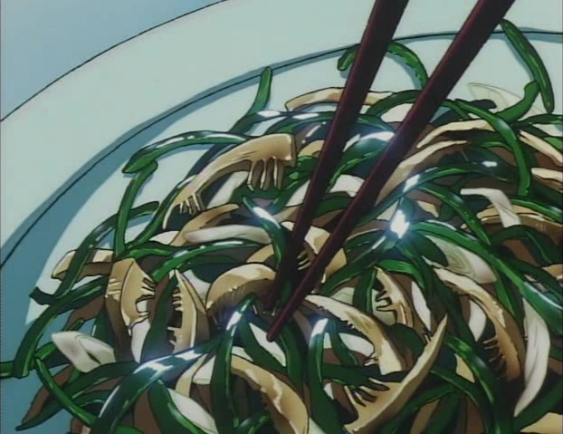

Cowboy Bebop Bell Peppers and Beef

Description
Jet: Hey Spike! It's ready!
Spike: What's cooking?
Jet: Special bell peppers and beef
Spike: You said bell peppers and beef. There's no beef in here. So you wouldn't call it bell peppers and beef now would you?
Jet: Yes, I would.
Spike: WELL IT'S NOT
Jet: It is when you're broke, alright?
Ingredients
- 1 Green bell pepper
- Ginger
- 1 cup mushrooms
- 1 white onion
- soy sauce
- 1 tbsp oyster sauce
- 1 tbsp vegetable oil
- Salt and pepper
Steps
- Prepare your ingredients. Slice onion into thin slices. Slice green bell pepper into thin slices. Slice mushrooms into thin slices.
- In a pan over medium high heat add your oil and scoop in your ginger. Cook for 30 seconds until the fragrances begin to full emit. Remove ginger from the pan leaving as much oil behind. Add in all your veggies and stir fry until fully softened. Add salt and pepper to taste.
- Add your ginger back in, add in soy sauce to taste and oyster sauce and stir until fully incorporated. Serve hot!